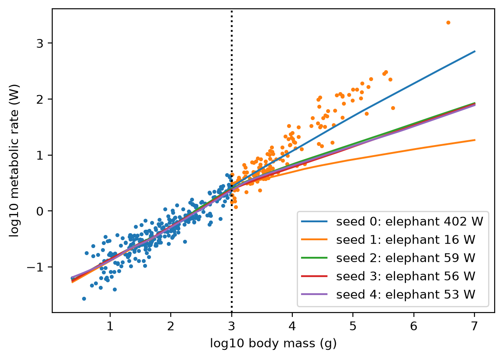

Below 1 kg the five networks coincide: the data pin them down. Above, each one follows its own direction, and the elephant ranges from 16 W to about 400 W. Nothing in the data decides; the random starting weights do. Seed 0 was luck.